Il nostro itinerario lungo la costa occidentale malesiana in direzione della Thailandia prevedeva una corta tappa nella capitale: Kuala Lumpur (o piu comunemente chiamata KL dai locali).
A differenza di quanto fatto durante la prima parte del viaggio, siamo riusciti a pianificare il nostro passaggio in Malesia con più anticipo prenotando sistemazione e organizzando visite mentre ancora eravamo a Singapore. Ci eravamo dimenticati, però, di aver prenotato una camera in un alberghetto in mezzo alla città senza finestre! Non avessimo mai preso questa decisione: pur avendo chiesto di cambiare camera per la puzza insopportabile nella prima camera assegnataci, l’odore di umido e chiuso ci ha accolto anche nella seconda camera!
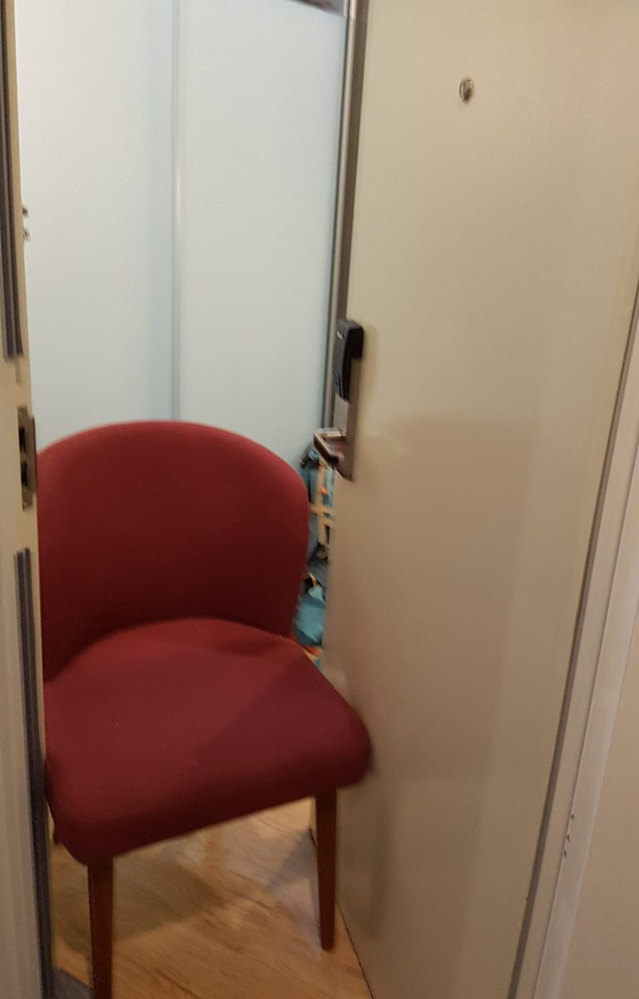L’odore era talmente intenso (e non sembrava diminuire nemmeno dopo i nostri vani tentativi di ventilazione) che ci siamo ritrovati a dormire tre notti con la porta della camera spalancata (porta bloccata con una sedia) e con i documenti di identità e cose di valore nascoste sotto il cuscino… A quanto pare non eravamo gli unici a soffrire dell’aria pesante nelle camere: molte altre porte dii altre camere come la nostra infatti rimanevano aperte o socchiuse durante tutto il giorno e notte.
La nostra visita alle Batu Caves a pochi chilometri dal centro città è stata contemporateamente estenuante e divertente.
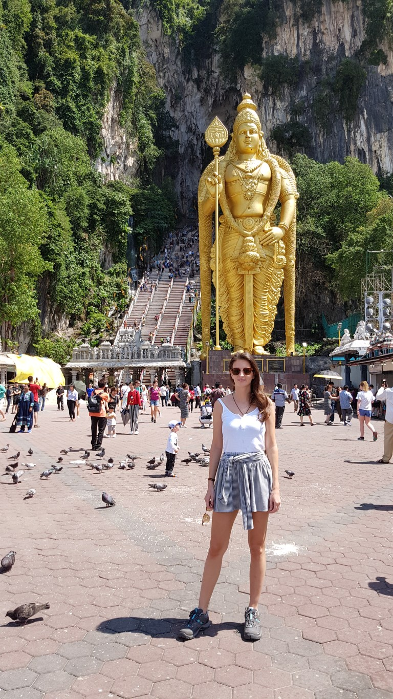Infatti, per accedere alla grotta / templio in cui vivono scimmie che si divertono a rubare oggetti ai visitatori, bisogna salire quasi 300 scalini… fossero gradini normali come i nostri sarebbe un discorso diverso, ma con scalini di quasi 30cm l’uno diventa tutto più difficile!
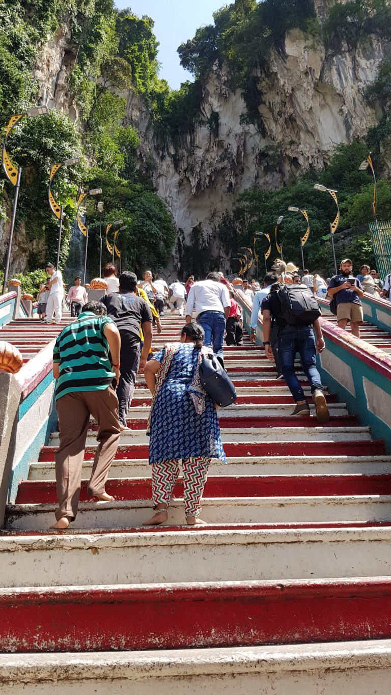 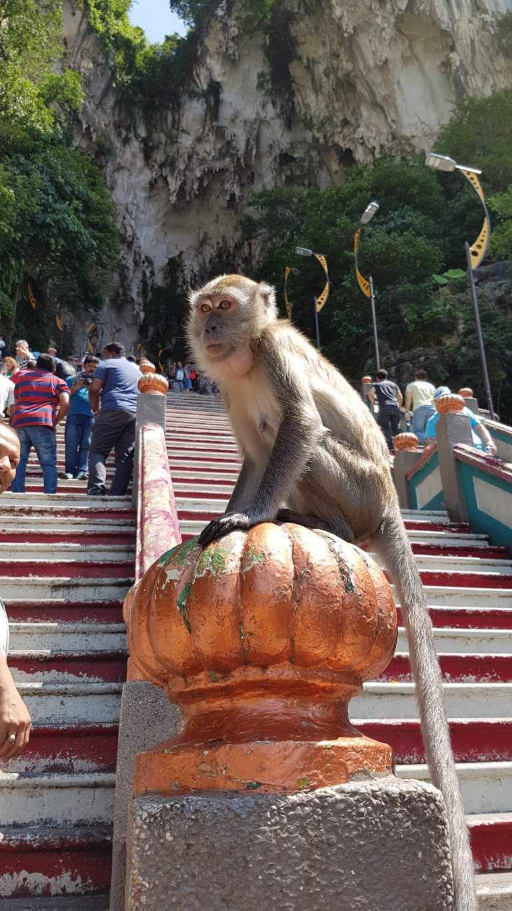 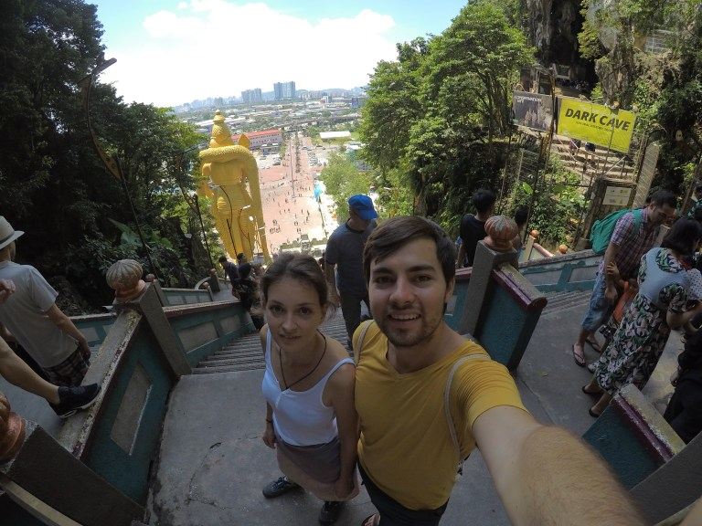Una volta nella caverna in cima alla scalinata, siamo stati accolti da più scimmiette alla ricerca di cibo.
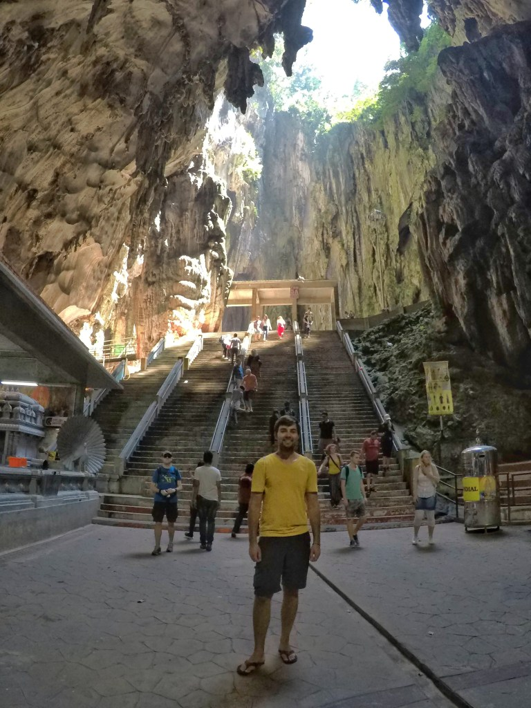 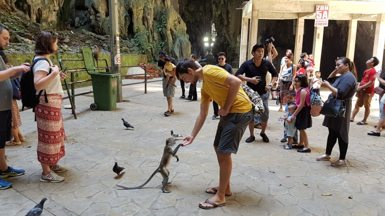Una visita alle famossisime Petronas Towers era d’obbligo, ed è così che dopo averle ammirate da sotto abbiamo deciso di salire in cima alla torre-antenna più alta del mondo (421m) che ci ha offerto una vista a 360° sulla città!
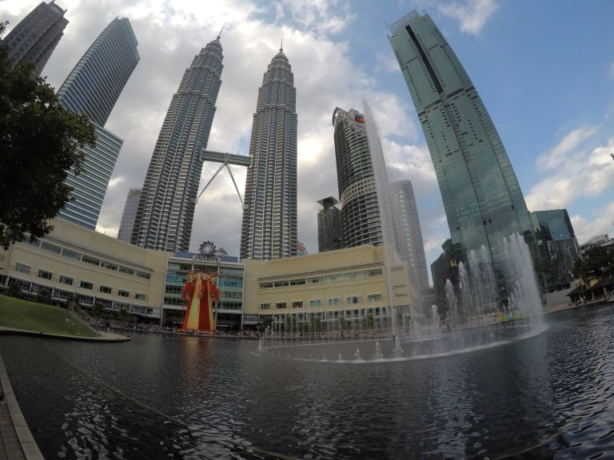A differenza di altri grattacieli su cui siamo saliti, il terrazzo su questa torre era all’aperto e senza un vetro di protezione. La vista era spettacolare, è per questo che abbiamo aspettato il tramonto sulla torre per poter dare un’occhiata alla città di notte!!
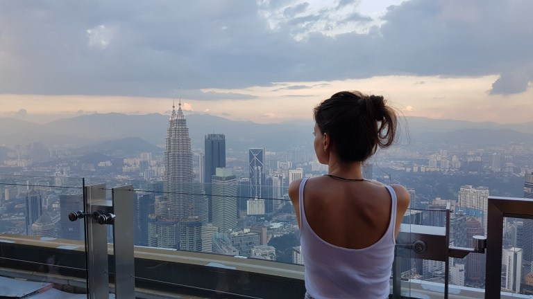Durante l’attesa abbiamo potuto entrare nella “glass box”: una terrazzina completamente in vetro sospesa nel vuoto!
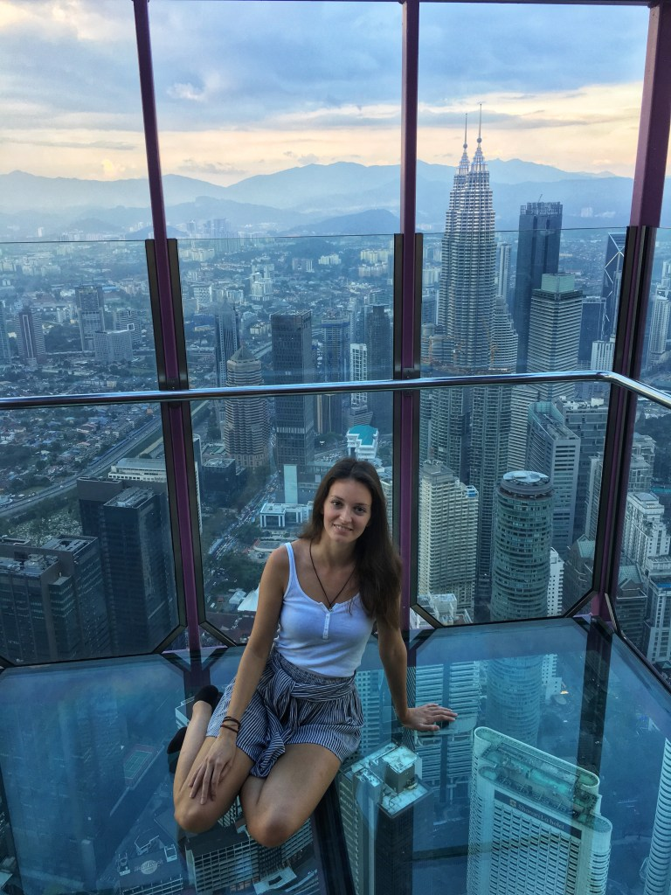 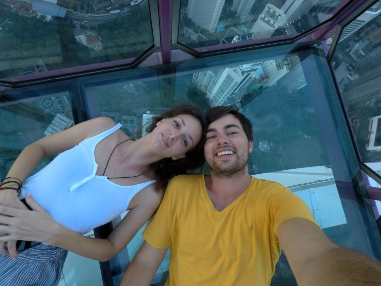 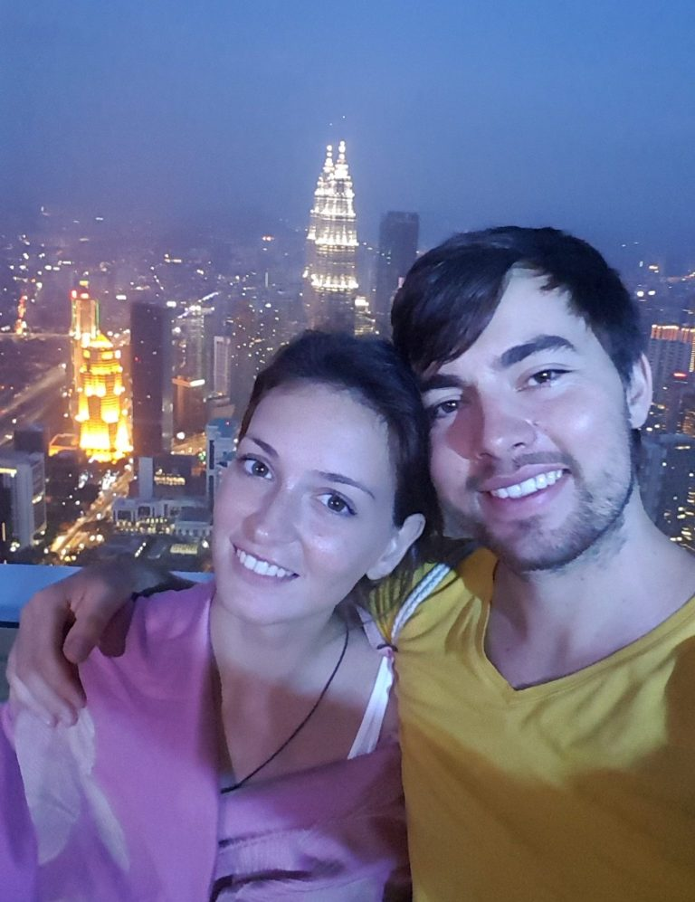 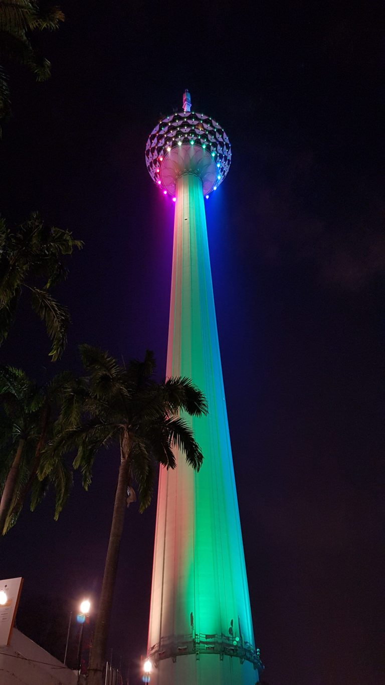Dopo qualche giorno di sosta nella capitale visitando i punti d’interesse più rinomati e girovagando per le strade affollate della metropoli, non ci è dispiaciuto andarcene. La città infatti non ci è piaciuta troppo: per le strade giravano solo uomini che lanciavano occhiatacce minacciose e la sera, molte strade si riempivano di gruppi di persone dall’aria pericolosa.
Comment Section